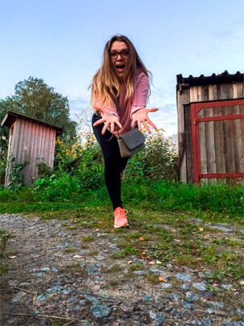

Как все успеть сейчас а не потом
Так вот, когда я начала рисовать. Так сказать вступила в новую жизнь. Я начала почему-то рисовать только-человечков. Это для меня не свойственно. Так как раньше я нелюдила их рисовать У меня не получаались глаза, нос, губы. А палицы и руки. ААААА так хотелось просторазорвать сови рисунки и выкинуть. Но сейчас все наоборот. Толи я перестморела то какими в идеале должны быть руки и ноги. Какое должно быть лицо. Не наю с чем это связанно. Вообщем сейчас мне нравиться придумывать разные персонажи. Очень нравися рисовать толстячков. Когда нибудь я научусь их правильно рисовать. И это будет офигенно. МОжно будет поставить галочку в пукте : научилась рисовать толстячков.
Еще раньше мне было стремно срисовывать. Я считала моя фантазия самая умная и огромная в этом плане. В принцепи так и есть. В голове у меня уже картина, а на бумаге из-за неопытности или из-за не умением рисовать правильно каие-то вещи. Не получалось. Не получалось и тут получилось. Потому что я перешаглнула через свою годость. Да именно гордость. И анчала срисовывать. Наверное таким образом у меня стали плучатся и руки и ноги и лица.
Так что срисовывать не плохо, а очень дае хорошо. Занятная практика. Тем более мы на столько все индивидуальны. что никогда не срисуем точь в точь. Так что вот так. А еще я поняла что даже самые рутые художники, иллюстраторы или дизайнеры. Берут идеи и срисовывают их с окружающего мира. Это могут быть как картинки в интернета, так и фотки. А может это просто человек седел рядом. И ты такой думаешь. Да это же персонаж. Эврика, Карл! Вот еще один совет. Иде вокруг нас, просто надо смотреть на все с точки зрения творчества. Знаете. когда вы смотрте в колейдоскоп, то он из предмета на котрый вы смотрите делает такую незабываемую фигню. Так вы можете смотреть на все через призму творчества, через колейдоском ништяка. всем уачи и успехов. А я пошла рисовать.